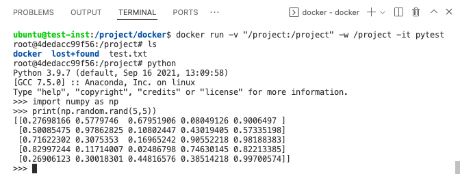
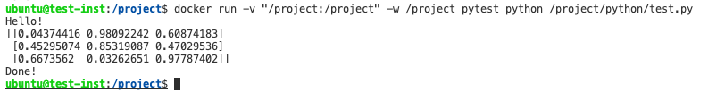
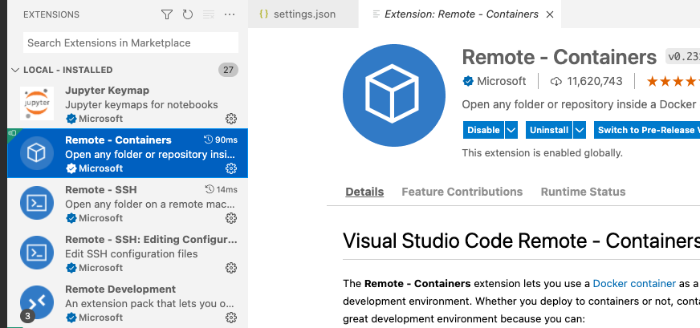
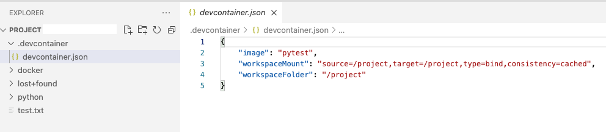
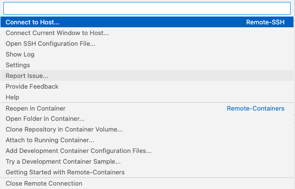

Pawsey’s cloud service, Nimbus is a national research-specific cloud service, open to any Australian researcher, including from state government. It is flexible and scalable to your research needs. You are able to access it whenever you wish, with no waiting in queues and you have total control over your instances to install and run whatever you want. It provides a great intermediary between the University of Sydney's HPC Artemis (for cluster jobs, using big data, or with large RAM needs) and your own local laptop/desktop. It can be used to great effect for medium-sized jobs, removing the need to thrash your laptop day and night!
You can signup for Nimbus through the Pawsey Application Portal. Once you hit the "Login" button and select "The University of Sydney", you will be able to use your sso credentials.
This guide guides you through the application process. This application asks you to provide details on:
After sumbission, there will be a wait time of a few days before your application is approved.
All projects now have a six-month validity period, after which an application must be submitted for an extension if continued Nimbus use is required (an automated email will be sent with a link to a pre-filled form).
A comprehensive guide can be found here, but please feel free to get in contact with one of the DARE research engineers if you require assistance on any of the below:
https://pawseysc.github.io/using-nimbus/
This guide takes you through the steps of:
ssh -i ~/.ssh/My_Key_Pair.pem ubuntu@148.118.##.## (note the login name is just the instance type e.g., ubuntu).We will create a separate volume to store our data and mount this to the instance. This avoids any problems that could occur if you fill up the actual instance volume. You can follow the instructions here to:
/project to follow the docker example belowThe best way to trasnfer files for most use cases is to use an ftp/sftp client (you can also use command line tools e.g., scp, rsync). Filezilla is a popular client and instructions for its use with Nimbus can be found here. A great choice on Mac is Cyberduck for which you would:
serverusername: ubuntu (or your selected instance flavour)~/.ssh/This guide covers some basic use cases, but does not touch on any of the more advanced supercomuting features of Nimbus. For more information on these features, please see the Nimbus User Guide or chat to a DARE research engineer.
Below is an example using docker to ensure a consistent python environment from your local computer to the Nimbus instance. If you need further help or need different software, please contact a DARE research engineer.
First we need to develop a Dockerfile to describe our environment. There is a wealth of information on creating Dockerfiles. For this example we will generate a container with an ubuntu version of linux, with Python installed. A simple introduction can be found here:
The code for our Dockerfile is below:
# syntax=docker/dockerfile:1
FROM ubuntu:18.04
# create a directory to mount our data volume
RUN mkdir /project
#Install ubuntu libraires and packages
RUN apt-get update -y && \
apt-get install git curl -y
#Set some environemnt variables we will need
ENV PATH="/build/miniconda3/bin:${PATH}"
ARG PATH="/build/miniconda3/bin:${PATH}"
RUN mkdir /build && \
mkdir /build/.conda
#Install Python3.9 via miniconda
RUN curl -O https://repo.anaconda.com/miniconda/Miniconda3-latest-Linux-x86_64.sh &&\
bash Miniconda3-latest-Linux-x86_64.sh -b -p /build/miniconda3 &&\
rm -rf /Miniconda3-latest-Linux-x86_64.sh
WORKDIR /build
RUN conda install python=3.9 numpy ipykernel
Briefly, we are:
You can then add code on the end to install any python package you would like as you would on your usual conda install - via pip, conda-forge or a yml file.
Now lets build this docker image on the Nimbus instance remembering the instructions for SSH connection from Visual Studio Code here:
pytest.Dockerfile and transfer it to Nimbus using Cyberduck (or FileZilla) to the location /project/docker/pytest.Dockerfile.cd /project/docker/pytest.Dockerfile and name it pytest using the command:
docker build --tag pytest -f pytest.Dockerfile .docker run -v "/project:/project" -w /project -it pytest
/project to an equivalent location /project within the docker image so that you can access the files you have on Nimbus/projectexitBelow you can see an example checking Python works correctly on Nimbus running a docker container (as per the Dockerfile installation above). This example uses Visual Studio Code to connect to Nimbus:

As a further test, we will copy the files "test.py" and "test.ipynb" from the examples directory of this repository to a folder on our nimbus instance - /project/python. We can run our script test.py from the command line using:
docker run -v "/project:/project" -w /project pytest python /project/python/test.py
With the output as shown below:

With a little configuration of Visual Studio Code we can connect directly to a docker container on Nimbus. This can be useful to interactively run code on Nimbus either directly from a .py file (including debugging) or from a Jupyter Notebook. Starting from the same point as above, with the /project folder open in Visual Studio Code via SSH, we will do the following:

/project directory create a subdirectory /project/.devcontainer/ and file /project/.devcontainer/devcontainer.json
docker run -v "/project:/project" -w /project -it pytest)pytest, mapping the /project folder to the container and changing the working directory in the docker container to /project {
"image": "pytest",
"workspaceMount": "source=/project,target=/project,type=bind,consistency=cached",
"workspaceFolder": "/project"
}


/project folderdevcontainer.json above you will now have a Visual Studio Code window open with a pytest Docker container on Nimbus - you can check that the "Remote Development" status in green in the bottom left reads something like:
Dev Container @ssh://146.118.##.##/project/python/test.ipynb notebook. You should be able to select your conda environment, run and confirm we are in the correct working directory and with the correct CPU/Memory configuration of your Nimbus instance.